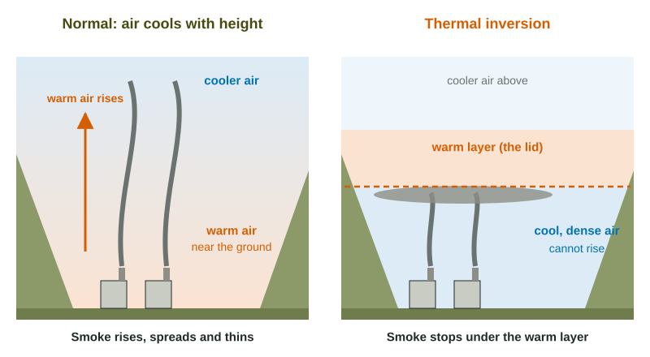

Thermal Inversion
A thermal inversion is a layer of warm air over cooler air near the ground, the reverse of the normal pattern.
Part 1 · Hook
Why this matters
Part 2 · Before you start
What this builds on
Part 3 · Prerequisite check
Quick check before you start
1. In which layer of the atmosphere does weather happen?
- The troposphere
- The stratosphere
- The mesosphere
- The thermosphere
Show the answer
The troposphere is the lowest layer, where air rises, mixes and makes weather.
- Correct: The troposphere:
- The stratosphere:
- The mesosphere:
- The thermosphere:
2. Which pollutant is fine particles 2.5 micrometers across or smaller?
- PM2.5
- NO2
- CO
- SO2
Show the answer
PM2.5 is particulate matter 2.5 micrometers or smaller.
- Correct: PM2.5:
- NO2:
- CO:
- SO2:
Part 4 · See it
See it first

Part 5 · Step by step
How it works, step by step
- On a clear, calm night the ground loses heat quicklythe air touching the ground cools, and in a valley cold air pools at the bottom
- A layer of warmer air sits above the cold airtemperature rises with height instead of falling: a thermal inversion
- The cool air near the ground is denser than the warm layer aboveit cannot rise, so smoke, exhaust and particles stay near the ground
- Emissions keep being added to the same shallow layerpollutant concentrations rise, and breathing problems increase
- Sunlight warms the ground, or a front brings windthe lowest air rises and mixes, and the inversion breaks up
Part 6 · Key ideas
Key ideas
- Normally the lowest air is warmest near the ground and cools with height, so warm, polluted air can rise and spread out.
- In a thermal inversion, a warm layer sits on top of cooler air near the ground. The cool, dense air cannot rise through it, so pollutants are trapped.
- Inversions are most common on clear, calm nights and winter mornings, and in valleys and basins ringed by mountains.
- Inversions do not make new pollution; they hold the pollution a place already makes. Deadly episodes such as London in 1952 combined an inversion with heavy coal smoke.
Part 7 · Misconception
A common mistake
The wrong idea: A thermal inversion is caused by pollution, so cleaner air would stop inversions from forming.
What actually happens: An inversion is a weather pattern: warm air over cool air. It forms with or without pollution. It only traps whatever pollutants are released under it.
Part 8 · Check yourself
Check yourself
Exam-style questions. Anything you miss goes into your review queue.
1. In the lowest layer of the atmosphere, how does air temperature normally change with height?
- It gets warmer as you go higher
- It stays about the same from the ground to the top
- It warms with height by day and cools by night
- It cools as you go higher
Show the answer
Normally the air is warmest near the ground, which the sun heats, and it gets cooler with height. Warm air near the ground can rise and carry pollutants up.
- It gets warmer as you go higher: That is the pattern of an inversion, not the normal one.
- It stays about the same from the ground to the top: Temperature changes with height in the lowest layer.
- It warms with height by day and cools by night: Normally it cools with height; an inversion reverses that.
- Correct: It cools as you go higher: Right: that is the normal pattern, which lets warm air rise.
2. Why does a thermal inversion trap pollutants near the ground?
- Warm air near the ground rises too fast to mix well
- The inversion layer turns pollutants into heavier gases
- Cool, dense air near the ground is held under warmer air
- Pollutants hold heat and sink to the ground
Show the answer
A layer of warm air sits on top of cooler, denser air. The cool air cannot rise through the warmer, lighter air above it, so it and its pollutants stay near the ground.
- Warm air near the ground rises too fast to mix well: In an inversion the air near the ground is the cool air, not the warm air.
- The inversion layer turns pollutants into heavier gases: An inversion changes how air moves, not what the pollutants are.
- Correct: Cool, dense air near the ground is held under warmer air: Right: the warm layer acts as a lid on the cool air below.
- Pollutants hold heat and sink to the ground: The pollutants are trapped because the air cannot rise, not because they sink.
Data
Air temperature above a valley town at dawn and in the afternoon
| Height above valley floor (m) | 6 a.m. temperature (°C) | 2 p.m. temperature (°C) |
|---|---|---|
| 0 | -8 | 4 |
| 200 | -5 | 2.5 |
| 400 | -1 | 1 |
| 600 | 0 | -0.5 |
| 800 | -1.5 | -2 |
| 1,000 | -3 | -3.5 |
3. Between which heights is there a thermal inversion at 6 a.m.?
- From 600 m up to 1,000 m above the floor
- From the valley floor up to 600 m
- From the valley floor up to 1,000 m
- There is no inversion in the 6 a.m. readings
Show the answer
In an inversion, temperature rises with height. At 6 a.m. it warms from -8 °C at the floor to 0 °C at 600 m, then cools again above that.
- From 600 m up to 1,000 m above the floor: Above 600 m the air cools with height, which is the normal pattern.
- Correct: From the valley floor up to 600 m: Right: -8, -5, -1 and 0 °C rise with height, the reverse of normal.
- From the valley floor up to 1,000 m: The temperature rises only to 600 m; above that it falls again.
- There is no inversion in the 6 a.m. readings: The air warms with height up to 600 m, which is an inversion.
4. Compare the 2 p.m. readings with the 6 a.m. readings. What has happened to the inversion?
- It has broken up: air cools with height again
- It has grown stronger, as the ground got colder
- It has moved up to between 600 and 1,000 m
- Nothing has changed, as the top layer is the same
Show the answer
At 2 p.m. the temperature falls steadily with height (4, 2.5, 1, -0.5 ...). The sun has warmed the ground and the air above it, so the inversion has broken up.
- Correct: It has broken up: air cools with height again: Right: the warm ground heats the lowest air, which can rise again.
- It has grown stronger, as the ground got colder: At 2 p.m. the ground is warmer (4 °C), not colder.
- It has moved up to between 600 and 1,000 m: Between 600 and 1,000 m the 2 p.m. air also cools with height.
- Nothing has changed, as the top layer is the same: The lowest layers changed a lot: -8 to 4 °C at the floor.
5. By how many degrees Celsius does the air warm from the valley floor to 600 m at 6 a.m.?
Type a number, then its unit (°C). Scale words (2.5 million) and powers of ten (2.5 × 10^6) are read.
Show the answer
Subtract the lower reading from the higher: warmer at 600 m.
- Answer: 8 °C
6. Smoke from wood stoves on the valley floor stops rising at about 600 m in the early morning. Why?
- The wind at 600 m blows downward and pushes it back
- Cold air above 600 m is too thin for the smoke particles to float in
- Smoke particles turn into gas once they reach 600 m
- It reaches the warm layer and is no longer warmer than the air
Show the answer
Smoke rises only while it is warmer and less dense than the air around it. At 600 m it meets the warm layer of the inversion, which is warmer than the rising smoke, so the smoke stops and spreads out under it.
- The wind at 600 m blows downward and pushes it back: The table shows temperature, not wind; the lid is the warm layer.
- Cold air above 600 m is too thin for the smoke particles to float in: Air above 600 m is cooler again; the lid is the warm layer at 600 m.
- Smoke particles turn into gas once they reach 600 m: Particles do not turn into gas; they collect under the warm layer.
- Correct: It reaches the warm layer and is no longer warmer than the air: Right: the inversion layer acts like a lid on the cooler air below.
7. Which conditions make a thermal inversion most likely?
- A windy, cloudy afternoon on an open plain
- A clear, calm winter night in a valley
- A hot summer afternoon after a thunderstorm
- A rainy morning on a windy coastline
Show the answer
On clear, calm nights the ground loses heat fast and cools the air touching it. In a valley the cold air pools under warmer air, and with no wind nothing mixes it.
- A windy, cloudy afternoon on an open plain: Wind mixes the air, and clouds keep the ground from cooling fast.
- Correct: A clear, calm winter night in a valley: Right: the ground cools fast and cold air pools in the valley.
- A hot summer afternoon after a thunderstorm: The sun-warmed ground and storm winds mix the air.
- A rainy morning on a windy coastline: Rain and wind keep the air stirred, which breaks layers up.
Part 9 · Summary
Summary
Part 10 · Up next
What comes next
Part 11 · Connections